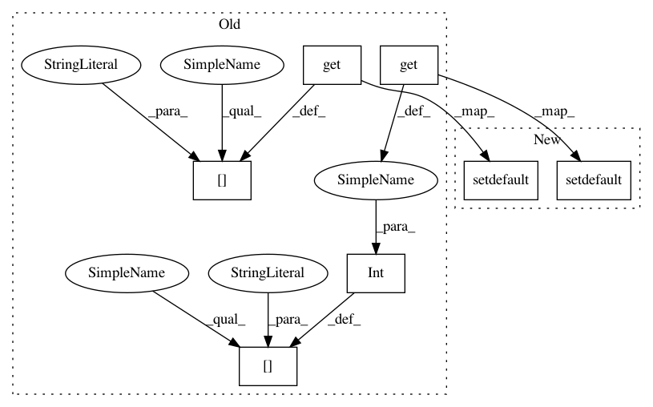

23475fbc1befccbeaf3717383a0f824ea83fef96,librosa/onset.py,,onset_detect,#,11
Before Change
// Default values for peak picking
// Taken from "MAXIMUM FILTER VIBRATO SUPPRESSION FOR ONSET DETECTION"
kwargs["pre_max"] = int( kwargs.get( "pre_max", .03*sr/hop_length ) )
kwargs["post_max"] = int( kwargs.get( "post_max", .03*sr/hop_length ) )
kwargs["pre_avg"] = int( kwargs.get( "pre_avg", .1*sr/hop_length ) )
kwargs["post_avg"] = int( kwargs.get( "post_avg", .07*sr/hop_length ) )
kwargs["delta"] = kwargs.get( "delta", 2 )
kwargs["wait"] = int( kwargs.get( "wait", .03*sr/hop_length ) )
// Peak pick the onset envelope
return librosa.core.peak_pick( onset_envelope, **kwargs )
After Change
// Default values for peak picking
// Taken from "MAXIMUM FILTER VIBRATO SUPPRESSION FOR ONSET DETECTION"
kwargs.setdefault("pre_max", 0.03*sr/hop_length ) // 30ms
kwargs.setdefault("post_max", 0.03*sr/hop_length ) // 30ms
kwargs.setdefault("pre_avg", 0.10*sr/hop_length ) // 100ms
kwargs.setdefault("post_avg", 0.07*sr/hop_length ) // 70ms
kwargs.setdefault("delta", 2 )
kwargs.setdefault("wait", 0.03*sr/hop_length ) // 30ms
// Peak pick the onset envelope
return librosa.core.peak_pick( onset_envelope, **kwargs )
In pattern: SUPERPATTERN
Frequency: 3
Non-data size: 7
Instances
Project Name: librosa/librosa
Commit Name: 23475fbc1befccbeaf3717383a0f824ea83fef96
Time: 2013-12-06
Author: brm2132@columbia.edu
File Name: librosa/onset.py
Class Name:
Method Name: onset_detect
Project Name: librosa/librosa
Commit Name: 23475fbc1befccbeaf3717383a0f824ea83fef96
Time: 2013-12-06
Author: brm2132@columbia.edu
File Name: librosa/onset.py
Class Name:
Method Name: onset_detect